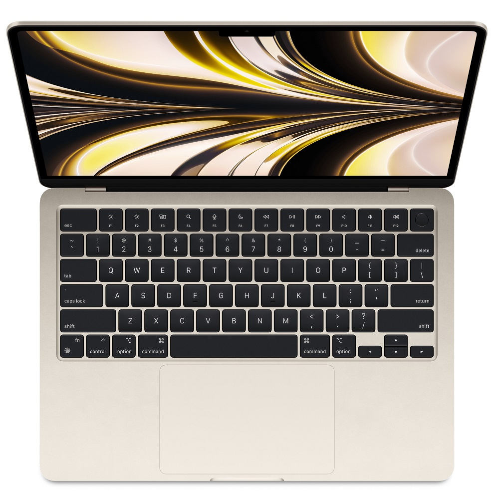

Apple MacBook Air M4 (2025) — тонкий и бесшумный ноутбук на базе процессора Apple M4. Доступен с дисплеем Liquid Retina диагональю 13,6 и 15,3 дюйма, памятью от 16 ГБ, Wi-Fi 6E и камерой 12 Мп Center Stage. Автономность — до 18 часов.
Цена: уточняется
| Характеристика | Описание |
|---|---|
| Процессор | Apple M4 (10-ядерный CPU, до 10-ядерного GPU) |
| Память | От 16 ГБ объединённой памяти |
| Накопитель | SSD от 256 ГБ до 2 ТБ |
| Дисплей | Liquid Retina, яркость 500 нит, P3 и True Tone |
| Беспроводная связь | Wi-Fi 6E и Bluetooth 5.3 |
| Автономность | До 18 часов воспроизведения видео |
| Камера | 12 Мп Center Stage с поддержкой Desk View |
| Разъёмы | Thunderbolt 4 / USB-C, MagSafe 3, аудиовыход 3,5 мм |
Apple MacBook Air M4 (2025) — современный ноутбук премиального класса, созданный для тех, кто ценит производительность, мобильность и комфорт в работе. Благодаря чипу Apple M4 устройство обеспечивает быструю работу приложений, плавную многозадачность и высокую энергоэффективность. Элегантный алюминиевый корпус, небольшой вес и тонкий профиль делают MacBook Air отличным выбором для работы дома, в офисе, университете или в путешествиях.
Процессор Apple M4 обеспечивает быстрый запуск программ и эффективную работу с несколькими задачами одновременно. Ноутбук подходит для программирования, веб-разработки, работы с документами, анализа данных, обработки фотографий и редактирования видео. Архитектура Apple Silicon помогает сочетать производительность с экономным расходом энергии.
Дисплей Liquid Retina передаёт насыщенные цвета, чёткий текст и высокую детализацию изображения. Поддержка широкого цветового охвата P3 и технологии True Tone обеспечивает естественную цветопередачу при различных условиях освещения. Экран подходит для чтения, просмотра фильмов, работы с графикой и длительных рабочих сессий. Доступны версии с диагональю 13,6 и 15,3 дюйма.
MacBook Air M4 оснащён клавиатурой Magic Keyboard с подсветкой, большим трекпадом Multi-Touch и системой Touch ID. Камера 12 Мп с функцией Center Stage помогает оставаться в центре кадра во время видеозвонков. Функция Desk View позволяет показывать рабочую поверхность во время онлайн-встреч.
Благодаря энергоэффективному процессору ноутбук способен работать продолжительное время без подзарядки. По данным Apple, автономность достигает 18 часов воспроизведения видео в условиях тестирования. Разъём MagSafe 3 обеспечивает удобное подключение зарядного кабеля, а порты Thunderbolt 4 / USB-C позволяют подключать совместимые аксессуары и внешние устройства.
Поддержка Wi-Fi 6E и Bluetooth 5.3 обеспечивает беспроводное подключение к сети, наушникам и другим совместимым устройствам. MacBook Air M4 также поддерживает подключение до двух внешних дисплеев при закрытой крышке ноутбука.
Корпус из алюминия сочетает прочность, минималистичный дизайн и премиальный внешний вид. Отсутствие вентилятора обеспечивает практически бесшумную работу при обычных нагрузках. Ноутбук доступен в серебристом, цвете «сияющая звезда», «полуночном» и небесно-голубом цветах.
Apple MacBook Air M4 станет отличным решением для студентов, специалистов, разработчиков и пользователей, которым нужен надёжный ноутбук на каждый день. Он сочетает высокую производительность, качественный дисплей, удобную клавиатуру и длительную автономность в компактном корпусе.
Apple MacBook Air M4 — производительность, мобильность и современный дизайн для решения повседневных и профессиональных задач.